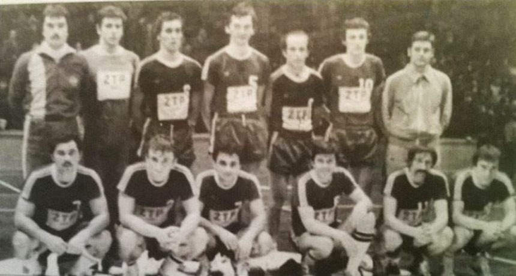
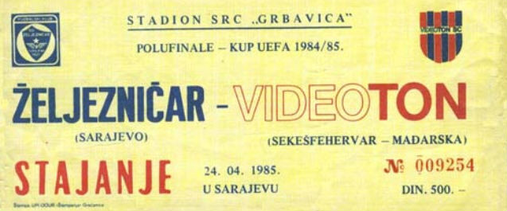
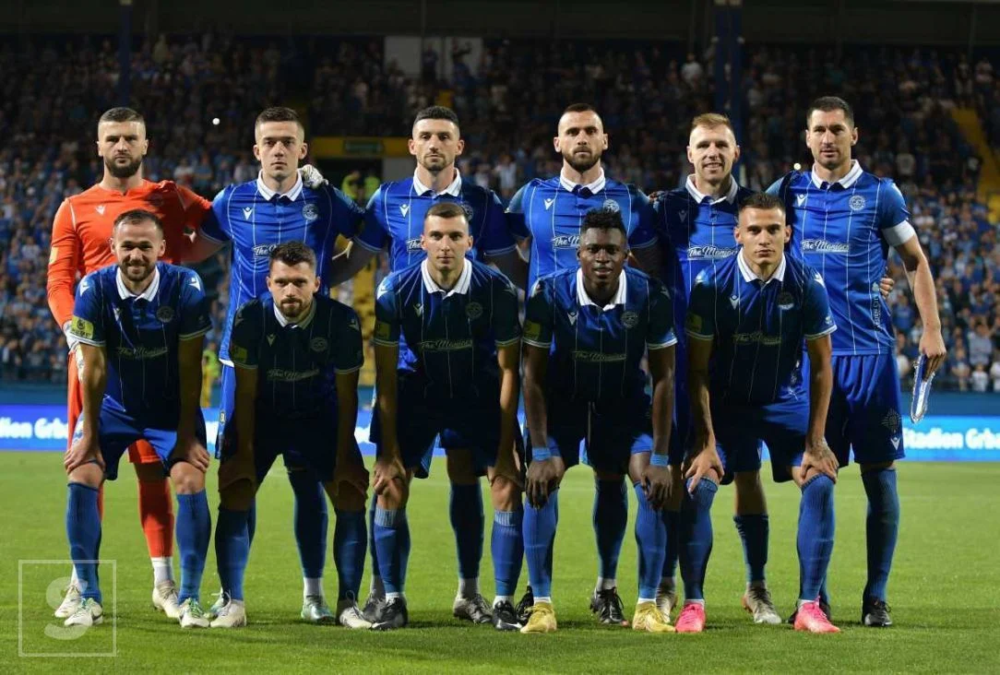

Historija FK Željezničara
FK Željezničar, osnovan 1921. godine u Sarajevu, predstavlja jedan od najuspješnijih i najstarijih fudbalskih klubova u Bosni i Hercegovini. Klub je dobio ime po željezničkim radnicima koji su ga osnovali, i ponosno nosi tradiciju i vrijednosti radničke klase.
Željezničar je postao poznat po svojim uspjesima u jugoslovenskoj ligi, a vrhunac klupskog uspjeha dogodio se 1985. godine, kada je ekipa stigla do polufinala Kupa UEFA. Klub je poznat i po razvoju mladih talenata, a mnogi od njih su kasnije ostvarili značajne karijere na međunarodnom nivou.
Nakon rata u Bosni i Hercegovini, FK Željezničar se uspio oporaviti i ponovo postati jedan od vodećih klubova u Premijer ligi BiH. Sa mnogobrojnim osvojenim titulama, klub i dalje ima snažnu vezu sa svojim navijačima i predstavlja simbol ponosa i ljubavi prema Sarajevu i cijeloj BiH.
Najznačajniji momenti
- 1921 - Osnivanje kluba.
- 1946 - Povratak nakon Drugog svjetskog rata i ulazak u Prvu ligu Jugoslavije.
- 1972 - Osvojena prva titula prvaka Jugoslavije.
- 1985 - Polufinale Kupa UEFA.
- 2000-tih - Višestruki prvak Premijer lige BiH i osvajač Kupa BiH.